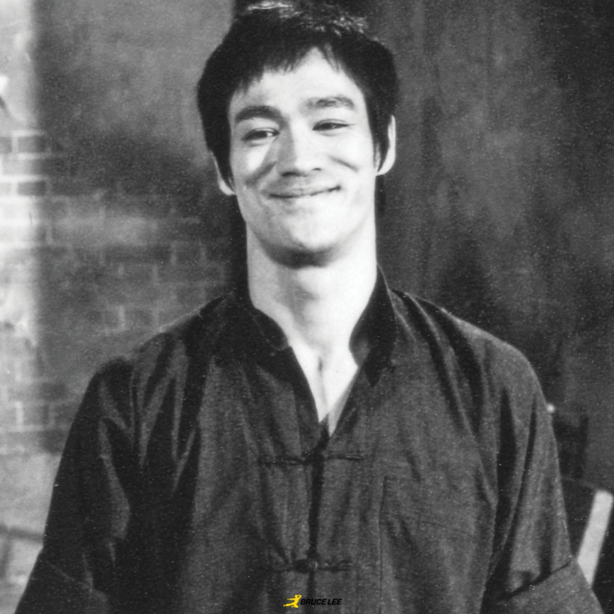

Bruce Lee
"Be formless... shapeless, like water.
Bruce Lee was a Hong Kong martial artist and instructor, an actor, director, and philosopher. The
founder of Jeet Kune Do, a martial arts philosophy that sought to use no way as way and
adapt what is useful while casting off what is useless. Lee is considered by commentators,
critics, media, and other martial artists to be the most influential martial artist of all time and
a pop culture icon of the 20th century, who bridged the gap between East and West. Often credited
with helping to change the way Asians were presented in American films. Time (magazine) also named
Lee one of the 100 most important people of the 20th century.

(1940 - 1973)